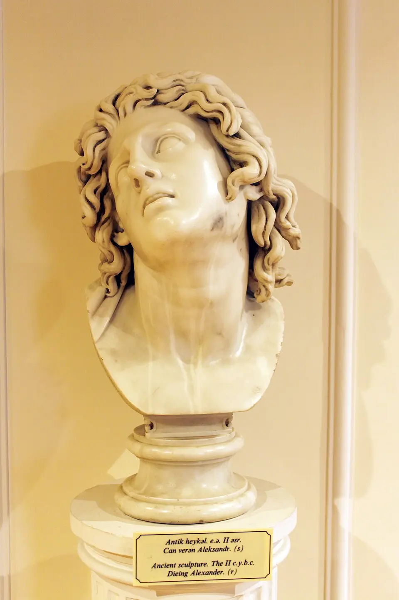
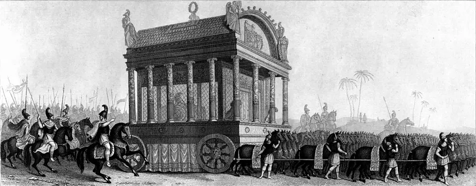
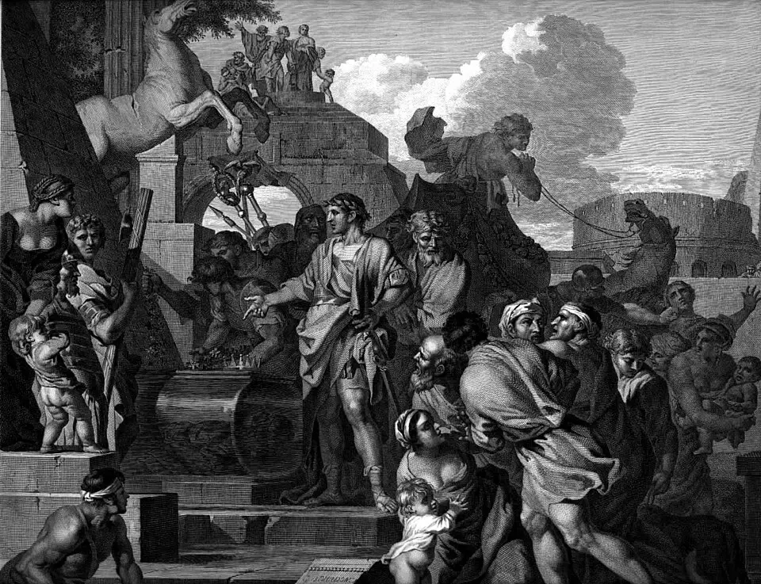
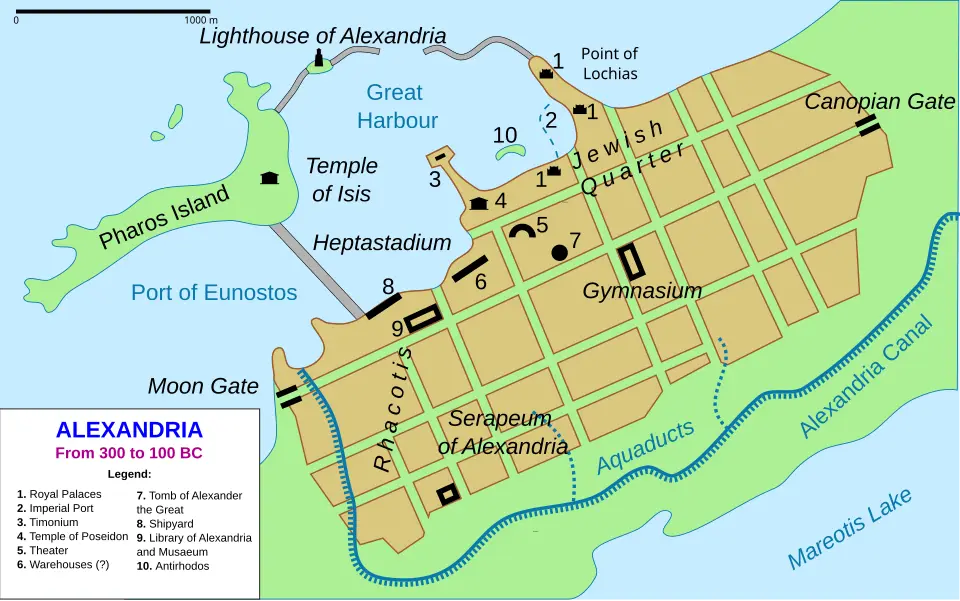

Thi hài Alexander Đại đế bị đánh cắp, rồi biến mất
Năm 321 TCN, một viên tướng chặn đoàn xe tang của Alexander và đưa thi hài về Ai Cập. Vài thế kỷ sau, không ai còn chỉ được ngôi mộ ở đâu.

Theo một nhật ký thiên văn của người Babylon, Alexander Đại đế qua đời trong cung điện của vua Nebuchadnezzar II ở Babylon, trong khoảng từ tối 10 đến tối 11/6/323 TCN, khi 32 tuổi. Ông mất sau 12 đến 14 ngày sốt. Đế chế của ông chưa có người kế vị rõ ràng. Thi hài của nhà vua vì thế trở thành một thứ quyền lực, và cuộc tranh giành nó mở đầu cho một bí ẩn kéo dài hơn 2.000 năm.
Theo Diodorus, thi hài được đặt trong một quan tài bằng vàng gò, làm vừa khít thân người.
Vì sao một thi hài lại đáng giá?
Theo tục lệ Macedonia, người chôn cất vị vua trước là người khẳng định quyền nối ngôi. Quintus Curtius Rufus và Justin chép rằng Alexander muốn được chôn ở đền thờ thần Zeus Ammon tại ốc đảo Siwa, Ai Cập. Nhưng nhiếp chính Perdiccas và những người kế nghiệp khác muốn đưa ông về khu lăng mộ hoàng gia ở Aigai, Macedonia.
Theo Diodorus, thi hài được đặt trong một quan tài bằng vàng gò, làm vừa khít thân người. Một nguồn cổ kể rằng riêng việc chuẩn bị cỗ xe tang đã mất hai năm. Không ai biết chắc thi hài được giữ bằng cách nào trong thời gian đó. Plutarch kể có thợ ướp xác Ai Cập. Năm 1889, nhà Ai Cập học E. A. Wallis Budge đoán thi hài được ngâm trong một thùng mật ong. Nhưng cỗ xe tang ấy không bao giờ về tới Macedonia.
Vụ cướp ở Syria


Cuối năm 322 hoặc đầu năm 321 TCN, khi đoàn xe tang đang ở Syria trên đường về Macedonia, Ptolemy chặn lại và đưa thi hài về Ai Cập. Ptolemy là một trong bảy cận vệ thân tín của Alexander, khi ấy đang cai quản Ai Cập. Thi hài được chôn trước hết ở Memphis, trung tâm cai trị của Alexander ở Ai Cập. Phe Perdiccas chỉ giữ được bộ giáp, vương miện và quyền trượng.
Năm 321 TCN, Perdiccas đem quân đánh Ai Cập. Cuộc vượt sông Nile thất bại, khoảng 2.000 lính thiệt mạng, và Perdiccas bị chính thuộc cấp giết trong lều. Ptolemy giữ vững Ai Cập.
Thi hài sau đó được dời từ Memphis về Alexandria, vào cuối thế kỷ 4 hoặc đầu thế kỷ 3 TCN. Pausanias cho rằng việc này do Ptolemy II làm, khoảng năm 280 TCN. Về sau, Ptolemy IV đặt Alexander vào một lăng chung của hoàng tộc. Strabo gọi lăng là Soma, tiếng Hy Lạp nghĩa là "thân thể". Từ đó, ngôi mộ trở thành nơi các nhà cầm quyền tìm đến, từ Caesar đến Caracalla.
Những vị khách cuối cùng


Ngôi mộ trở thành nơi các nhà cầm quyền tìm đến. Julius Caesar viếng năm 48 TCN. Cleopatra VII lấy vàng từ ngôi mộ để trang trải cuộc chiến với Octavian. Sau khi Cleopatra chết, Augustus đến viếng, được kể là đặt hoa lên mộ và một vương miện vàng lên đầu Alexander. Theo Suetonius, Caligula lấy đi tấm giáp ngực của Alexander. Năm 199, Septimius Severus cho niêm phong ngôi mộ. Năm 215, Caracalla đặt lên quan tài áo, nhẫn và thắt lưng của chính mình.
Chiếc quan tài vàng đã không còn từ trước đó. Vào khoảng năm 89 đến 90 TCN, nó bị nấu chảy và thay bằng một quan tài thủy tinh hoặc pha lê. Sau những vị khách ấy, dấu vết của ngôi mộ mờ dần.
Sử sách chép gì, và chép đến đâu


Mọi điều ta biết về ngôi mộ đều đến từ văn bản. Pausanias và Biên niên Paros, một văn bản gần cùng thời, ghi việc chôn ở Memphis. Strabo, Diodorus, Suetonius ghi những chuyện về sau. Chưa có hiện vật khảo cổ nào được xác nhận là thuộc về ngôi mộ.
Dấu vết cuối cùng khá mờ. Khoảng năm 400, John Chrysostom đến Alexandria và nhận xét rằng ngay người dân của Alexander cũng không biết mộ ông ở đâu. Cùng thời gian ấy, Cyril thành Alexandria lại ghi rằng ngôi mộ bị mở và cướp theo lệnh hoàng đế Theodosius I. Về sau, các tác giả như al-Masudi và Leo người châu Phi vẫn kể có một ngôi mộ được tôn kính ở Alexandria, nhưng không rõ đó có phải là mộ thật.
Hội đồng Tối cao về Cổ vật Ai Cập đã công nhận chính thức hơn 140 cuộc tìm kiếm. Năm 1888, Heinrich Schliemann xin đào dưới thánh đường Hồi giáo Nabi Daniel ở Alexandria nhưng bị từ chối. Năm 1995, nhà khảo cổ Hy Lạp Liana Souvaltzi tuyên bố tìm thấy mộ ở Siwa. Bộ Văn hóa Hy Lạp nghi ngờ, nói rằng chưa rõ công trình ấy có phải là một ngôi mộ hay không.
Giả thuyết lạ nhất đến từ Andrew Chugg. Ông cho rằng thi hài Alexander đã bị nhận thành thánh Mark, và năm 828 các thương nhân Venice đã lấy trộm nó, mang về thờ trong Vương cung thánh đường San Marco. Giả thuyết này chưa được kiểm chứng. Năm 2014, một ngôi mộ lớn thời Alexander được tìm thấy ở Amphipolis, Hy Lạp, nhưng nhóm khai quật kết luận nó là đài tưởng niệm Hephaestion, bạn thân của nhà vua.
Người ta biết khá chắc thi hài Alexander từng nằm ở Memphis, rồi ở Alexandria, và được nhiều hoàng đế đến viếng. Điều chưa ai biết là chuyện gì đã xảy ra với nó sau đó.